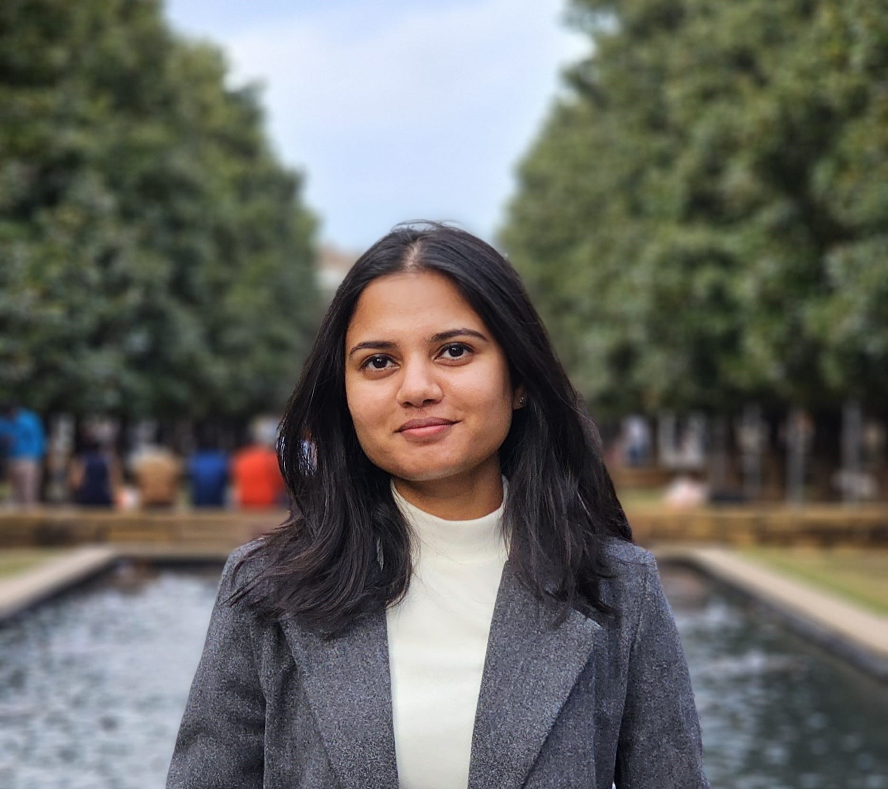

PhD Student · UT Dallas · StARLinG Lab
Hi, I'm Pranuthi —
I work on Trustworthy Multimodal Fusion.
I'm a PhD student in Computer Science at the University of Texas at Dallas, advised by Prof. Sriraam Natarajan. My research sits at the intersection of multimodal fusion, probabilistic models, and neuro-symbolic systems — with a focus on building fusion frameworks that are uncertainty-aware, credibility-aware, robust, and interpretable.

Recent publications
-
FUSION 2026 · Conference
Context-specific Credibility-aware Multimodal Fusion with Conditional Probabilistic Circuits
-
AISTATS 2025 · Conference
Credibility-Aware Multi-Modal Fusion Using Probabilistic Circuits
-
FUSION 2024 · Conference
On the Robustness and Reliability of Late Multi-Modal Fusion using Probabilistic Circuits